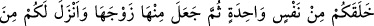
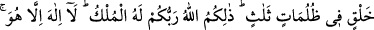
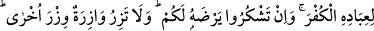
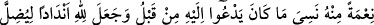
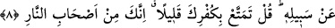
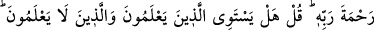
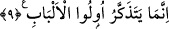

HİÇ BİLENLERLE
BİLMEYENLER BİR OLUR MU?
6. Allah sizi bir tek nefisten (Âdem’den) yarattı, sonra ondan da eşini yarattı.
Sizin için hayvanlardan sekiz eş meydana getirdi. Sizi de annelerinizin karınlarında
üç katlı karanlık içinde çeşitli safhalardan geçirerek yaratıyor. İşte bu yaratıcı,
Rabbiniz Allah’tır. Mülk O’nundur. O’ndan başka ilah yoktur. Öyleyken nasıl
oluyor da (O’na kulluktan) çevriliyorsunuz?
7. Eğer inkâr ederseniz, şüphesiz Allah, size muhtaç değildir. Bununla beraber O,
kullarının küfrüne razı olmaz. Eğer şükrederseniz sizden bunu kabul eder. Hiçbir
günahkâr diğerinin günahını çekmez. Nihâyet hepinizin dönüp gidişi, Rabbinizedir.
Yaptıklarınızı O size haber verir. Çünkü O, kalplerde olan her şeyi hakkıyla
bilendir.
8. İnsanın başına bir sıkıntı gelince, Rabbine yönelerek O’na yalvarır. Sonra Allah
kendisinden ona bir nimet verince, önceden yalvarmış olduğunu unutur. Allah’ın
yolundan saptırmak için O’na eşler koşar. (Ey Muhammed!) De ki: Küfrünle biraz
eğlenedur; çünkü sen, muhakkak cehennem ehlindensin!
9. Yoksa geceleyin secde ederek ve kıyamda durarak ibâdet eden, âhiretten